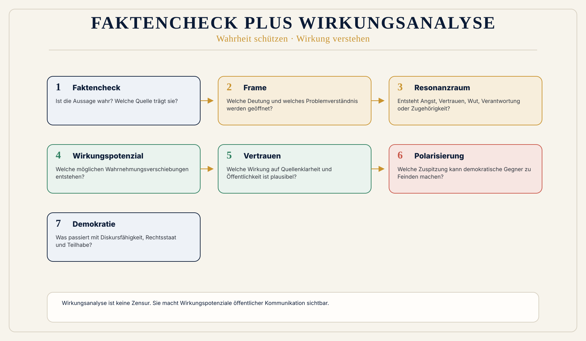

Reichweite statt Relevanz
Die alte Medienlogik verwechselt Reichweite mit Relevanz. Plattformen belohnen Reaktion, nicht Verantwortung.
 Wirkungsökonomie
Wirkungsökonomie
Für wen · Journalismus und Öffentlichkeit
Journalismus muss nicht aktivistischer werden. Er muss wirkungsbewusster werden.
Ein Faktencheck fragt, ob eine Aussage stimmt. Eine Wirkungsanalyse fragt zusätzlich, welche Zustände durch Sprache, Bilder, Tonalität, Auswahl, Wiederholung und Reichweite verändert werden können.
In einer digitalen Öffentlichkeit, in der Aufmerksamkeit nach Erregung organisiert wird, reicht Wahrheit allein nicht mehr. Wahrheit muss auch wirksam vermittelt, geschützt und rückgekoppelt werden.
Die Wirkungsökonomie versteht Öffentlichkeit deshalb nicht als Marktplatz beliebiger Meinungen, sondern als demokratischen Wirkungsraum.
Warum diese Perspektive wichtig ist
Journalismus steht heute zwischen zwei Fehlsteuerungen. Auf der einen Seite wächst der Druck auf Geschwindigkeit, Reichweite, Klicks, Zuspitzung und Empörung. Auf der anderen Seite erwarten Menschen Orientierung, Einordnung, überprüfbare Quellen und demokratische Verlässlichkeit.
Das alte Mediensystem misst Aufmerksamkeit. Die Wirkungsökonomie fragt, was diese Aufmerksamkeit bewirkt.
Ein Artikel kann faktisch korrekt sein und trotzdem durch Titel, Bildauswahl, Reihung, Tonalität oder Kontext Misstrauen, Angst oder Polarisierung verstärken. Umgekehrt kann Journalismus Wirkung entfalten, indem er Zusammenhänge sichtbar macht, Macht prüft, Konflikte einordnet und Menschen handlungsfähig macht.
Was heute falsch läuft
Die alte Medienlogik verwechselt Reichweite mit Relevanz. Plattformen belohnen Reaktion, nicht Verantwortung.
Redaktionen geraten unter Zeitdruck, Talkformate belohnen Konflikt und politische Kommunikation baut Wahrnehmungsräume.
Wenn Sprache Gruppen formt, Institutionen delegitimiert oder Feindbilder verdichtet, entsteht Wirkungspotenzial, das im Faktencheck unsichtbar bleibt.
Warum Reparatur nicht reicht
Faktenchecks prüfen, ob Aussagen stimmen. Das ist notwendig, aber nicht ausreichend, wenn Sprache, Bilder, Wiederholung und Plattformlogik Resonanzräume öffnen.
Die WÖk ergänzt Faktenprüfung um Wirkungsanalyse: Welche Frames werden verstärkt, welche Wirkungspotenziale entstehen und was geschieht mit Vertrauen, Diskursfähigkeit und Demokratie?
WÖk-Verschiebung
Die WÖk ergänzt den Faktencheck um einen Folgencheck. Sie fragt nicht nur: Ist die Aussage richtig? Sie fragt: Welche Resonanzräume öffnet sie? Welche Handlungsschwellen verschiebt sie? Welche Gruppen werden gestärkt oder abgewertet?
Journalismus wird dadurch nicht zur Gesinnungsprüfung. Er wird präziser. Zwischen Fakt, Meinung, Frame, Narrativ und Wirkungspotenzial wird sauber unterschieden.
Konkreter Gewinn
Was nicht passiert
Die WÖk ersetzt keine Redaktion und keine journalistische Verantwortung.
Sie fordert keine Zensur und schafft keine staatliche Wahrheitshoheit.
Sie bewertet nicht private Meinungen, sondern Wirkungspotenziale öffentlicher Kommunikation.
Wirkungspfad
Konkretes Beispiel
Ein Artikel über Migration kann sachlich über Zahlen berichten. Wenn er aber konsequent mit Bildern von Menschenmassen, Begriffen wie Kontrollverlust und einer Erzählung von Bedrohung arbeitet, entsteht ein anderer Resonanzraum als bei einer Analyse von Ursachen, Arbeitsmarkt, Kommunen, Integration, Recht und Versorgung. Die Fakten können teilweise gleich sein. Die Wirkungspotenziale unterscheiden sich massiv.
Visual
Zwei Ebenen. Links Faktencheck: Aussage -> Quelle -> Richtigkeit. Rechts Wirkungsanalyse: Aussage -> Frame -> Resonanzraum -> Wirkungspotenzial -> demokratische Wirkung. Ruhige WÖk-Liniengrafik, keine Zeitungsschnipsel, keine Parteisymbole, keine echten Screenshots.

Vertiefung
Die nächste Frage lautet nicht, wie diese Zielgruppe nachhaltiger wird. Sie lautet: Welche alte Steuerungslogik erzeugt das Problem, und wie verändert Wirkung die Logik selbst?
Weiterlesen im Blog
Quellenbasis / Einordnung